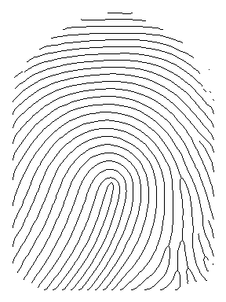

Homework-1
This homework is for the Biometrics class in Yildiz Technical University . Purpose is to acquire skeleton of the fingerprint image without noise or any interference. Every step of the progress will be presented with each of the respective processes.
The image processing is done by the help of the Python language. The Python version is 3.6.4. Anaconda installation pack installs all of these libraries if I recall correctly. The library and the frameworks are:
- Numpy; for array operations
- Scipy; for image processing
- Matplotlib; for plotting
- os; for operating system operations
First I will try to morph the image with, erosion, dilation, opening and closing. Then image will be processed via multiple filters. After that, I will apply thresholds and finally the skeletonization/thinning will be applied.
Whole steps can be accessed via panel to the right.
Fingerprint image and the Histogram
Image on the left side is my 288x384 fingerprint image, generated by SFinGe. What follows that is the initial histogram of the image. You can right-click and view or download them by their original size.
Morphology
Now I will apply Erosion, Dilation, Opening and closing respectively on the original image. To clarify, these morph operations will be done on the original image seperately for the comparison.

Enhancement
This time, standard filters will be applied to the morphed images. These filters are gaussian, median and mean.

Binarization
This time various thresholding methods will be applied on the processed image. This thresholding methods are:
- Custom Thresholding(Assigned by looking to the histogram)
- Otsu Thresholding
- Adatpive Thresholding


Skeletonization
The last step before evaluation. Now, skeletonization will be applied to each of the images above.

Evaluation
Just by looking at the results, we can say adaptive thresholding is very performative, but leaves a lot of pepper to deal with. Also Otsu and Custom thresholds have good results. But I don't think these would be reliable without properly filtering out the regional blackness or whiteness. Maybe just for my fingerprint image, we can easily choose one, but for a broad analysis we will be needing a better approach
I have found a project which greatly achieves enhancing, will try to understand the code and achieve similar results with my implementation. Source is: Fingerprint-Enhancement-Python
Masking and Normalization
First step is the segmentation and getting the mask and normalized image. Image is normalized the standard deviation is calculated within convolved blocks. Low threshold is applied to the standard deviated image, and we got the mask. Image is normalized with the masked image again to achieve a better region of image.
Orientation
Orientation is achieved via convolving gaussian kernels over the image. First image gradient is calculated. Then, weighted summation with blocks is applied. Principal direction is calculated and Sine and Cosine of the doubled angles achieved. We see from the image that the direction differential is based on the middle of the image. After that sharp difference, it can be noticed that orientation goes circular.
Frequency analysis and Gabor Filter
We find the overall ridge frequency of the image. For each block, we find the mean orientation within. Then, blocks spatial frequency of the block is calculated. We only use the mean frequency of the calculated frequency distribution.
So far we have orientation, mean frequency and the normalized image. We can apply the gabor filter now.
Skeletonized image seems nearly perfect now. Though, there are some circles on the lines. Let's apply opening, closing and gaussian before the processing.

This is so much better.
Results and Further Research
As it can be clearly seen from the skeletonized images, the enhancement approeach of Fingerprint-Enhancement-Python of the fingerprint image is way better than my basic approachs. Even though there are some lines-pepper within the image, it still outperforms the basic approachs with the not connected ridges.
It can be said that the Gabor Filter is the defacto operation for the fingerprint enhancement process. Also, preprocessing the image before the filter, improves the result greatly. Further research must be done to eliminate unconnected lines-pepper. I will look into it in the mean time.
Last image will be my base fingerprint image for the upcoming homeworks.